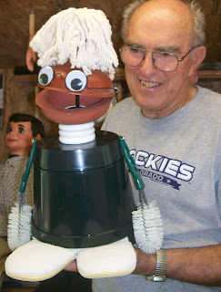

For Sale - rare!
8/29/2012
VINTAGE "SCRUBBY" VENTRILOQUIST PUPPET
A very funny, yet practical puppet made up of cleaning tools and designed to be assembled during the act! (Routine included.) A wash pail body; arms of scrub brushes; feet of cleaning sponges; two Plungers make the head and mouth; a mop for hair! Add eyeglasses with jiggle eyes attached and "on with the show"!
The mouth opens and closes from a lever on the "head post" from within the "body" just like a true vent figure! There's never been a ventriloquist "dummy" quite like this one! Only a few were built, so this is both a collectible as well as a very useful novelty figure. I've held this one for over 20 years. It is unused and in perfect condition - now it can be yours!
http://cgi.ebay.com/ws/eBayISAPI.dll?ViewItem&item=261090156147
{kind=link}

by KEVIN DETWEILER! RARE! ORIGINAL MODEL. MINT!A very funny, yet practical puppet made up of cleaning tools and designed to be assembled during the act! (Routine included.) A wash pail body; arms of scrub brushes; feet of cleaning sponges; two Plungers make the head and mouth; a mop for hair! Add eyeglasses with jiggle eyes attached and "on with the show"!
The mouth opens and closes from a lever on the "head post" from within the "body" just like a true vent figure! There's never been a ventriloquist "dummy" quite like this one! Only a few were built, so this is both a collectible as well as a very useful novelty figure. I've held this one for over 20 years. It is unused and in perfect condition - now it can be yours!
http://cgi.ebay.com/ws/eBayISAPI.dll?ViewItem&item=261090156147